🐏 帕魯玩家查詢工具網 · 使用手冊
本手冊涵蓋網站上方導覽列的全部 9 個分頁,每個功能都附實際畫面截圖與操作步驟。玩家只需要瀏覽器,不用安裝任何東西。
系統架構
一組 Docker Compose 起四個服務:玩家只接觸查詢網站;網站透過排程器 API 讀取由 palsave 解析出來的存檔資料,所以看到的永遠是伺服器的真實資料。
導覽總覽
| 分頁 | 一句話功能 | 給誰用 |
|---|
| 📊 總覽 | 全服重點數字 + 開服狀態 + Top 排行 | 所有人打開第一眼 |
| 🧑 玩家查詢 | 找某個玩家,看等級/帕魯/圖鑑 | 想查自己或朋友 |
| 🐾 帕魯查詢 | 全服帕魯搜尋 + 物種報表 | 找誰有某隻帕魯 |
| 🏷️ 詞條查詢 | 用被動/技能詞條反查帕魯 | 配種素材蒐集 |
| 🥚 配種表 | 配種計算/反查/配種樹/最短路徑 | 配種規劃(本站招牌) |
| 📖 圖鑑收服率 | 每人圖鑑完成度與缺哪些 | 收集控 |
| 👑 首領進度 | α/塔王討伐收服進度 | 打王進度追蹤 |
| 🏆 排行榜 | 玩家/帕魯/能力職多維排行 | 競爭樂趣 |
| 🕐 上線分析 | 誰常上線、什麼時段最熱鬧 | server 管理與揪團 |
💡 右上角可切換 繁中/簡中/English/日本語 四種語言、深淺色主題,以及 🔄 重新載入最新存檔資料。
📊 總覽
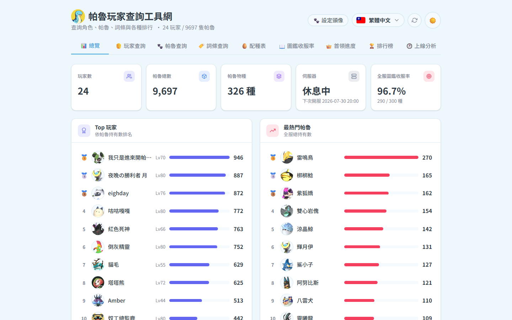
總覽:玩家數/帕魯總數/物種數/開服狀態/全服收服率 + Top 玩家與最熱門帕魯
- 伺服器狀態卡會顯示「營運中/休息中」與下次開服時間(由排程器提供)。
- 圖表卡右上角可切換 甜甜圈/圓餅/長條/折線 檢視。
- 點任何玩家名或帕魯,會直接跳到對應的查詢分頁。
🧑 玩家查詢
搜尋玩家 → 點卡片看該玩家全部帕魯與統計
- 輸入玩家名稱(支援部分比對),或直接瀏覽全部玩家卡片。
- 可依 帕魯數/等級/經驗/圖鑑數 排序。
- 點玩家卡 → 彈出詳情:統計磚(等級/帕魯總數/完美個體/α收集…)+ 帕魯清單(依戰力排序,點帕魯看個體值、被動、技能)。
🐾 帕魯查詢
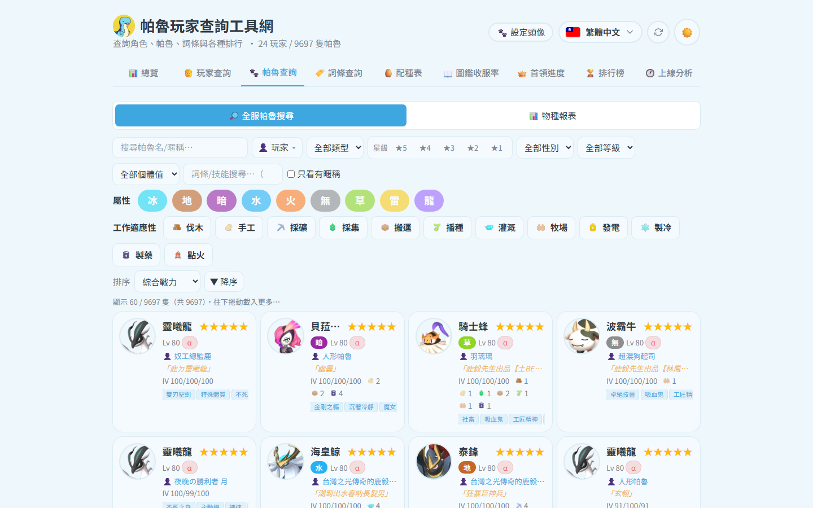
「全服帕魯搜尋」模式:多條件過濾整個伺服器的每一隻帕魯
- 🔎 全服帕魯搜尋:名稱/屬性/被動詞條/星級/性別/工作適性/IV 等多重過濾;每張卡顯示擁有者。
- 📊 物種報表:每個物種的全服總數、擁有人數、誰抓最多;點列展開全部個體。
🏷️ 詞條查詢
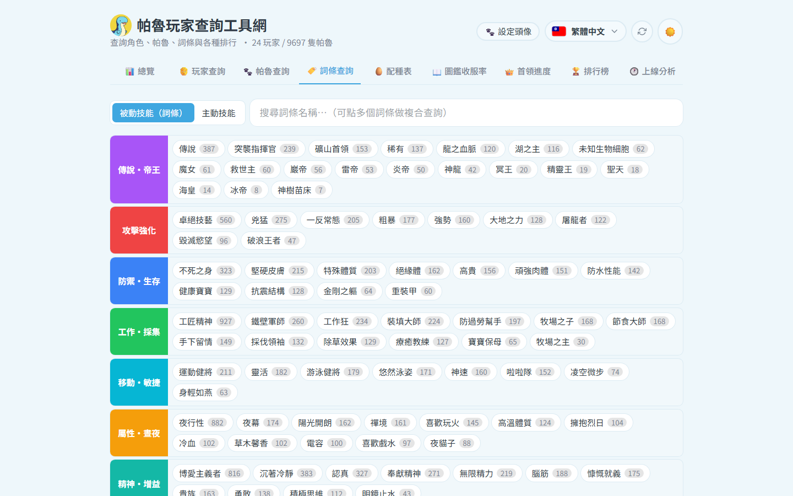
選詞條(可多選 且/或)→ 看誰的哪隻帕魯符合
- 詞條依分類分層上色(傳說・帝王/攻擊強化/…),點選即加入條件。
- 「且 / 或」切換多詞條的組合邏輯;結果列出每位玩家符合的帕魯。
🥚 配種表(招牌功能)
資料涵蓋 299 隻可配種帕魯 × 44,851 筆配方(全組合)。三種模式左上切換;右側永遠是帕魯清單:搜尋 + 屬性過濾 + 排序,點卡片就填入目前作用中的欄位。
模式一:配種計算(A + B = 子代)
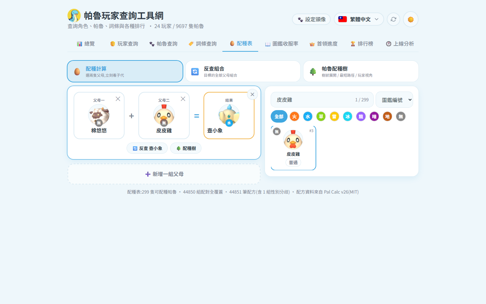
點右側清單選兩隻父母,結果即時出現;可「➕ 新增一組父母」同時比較多組
- 點「父母一」欄位(藍框=作用中)→ 點右側帕魯卡填入 → 自動跳到「父母二」。
- 結果立即顯示;性別分歧的特例(妮姆芙×芙蕾雅)會列出兩種結果。
- 每組下方可一鍵「🔄 反查」或「🌳 配種樹」;第一組 ✕ 是清空,其餘組 ✕ 是刪除。
模式二:反查組合(子代 → 父母)
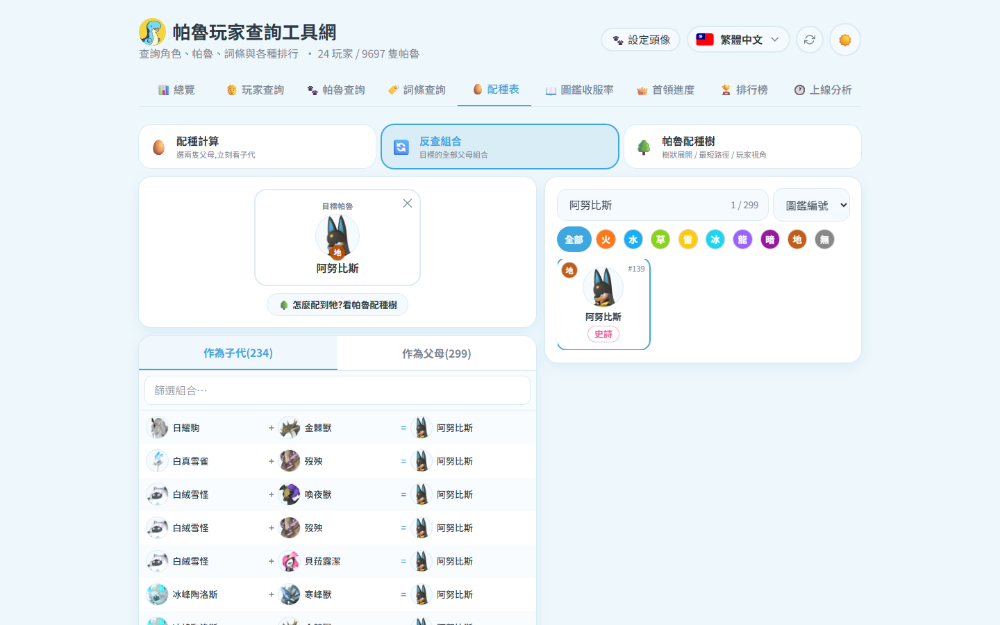
「作為子代」列出所有能生出目標的父母組合;「作為父母」列出目標與所有夥伴的結果
模式三:帕魯配種樹
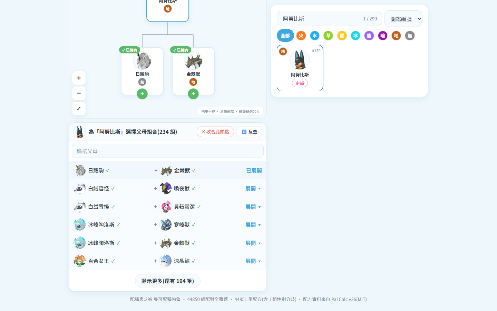
🌳 樹狀配種:目標在樹頂,點節點展開父母;畫布可拖曳/滾輪縮放;缺的帕魯灰階並列在「還缺」清單
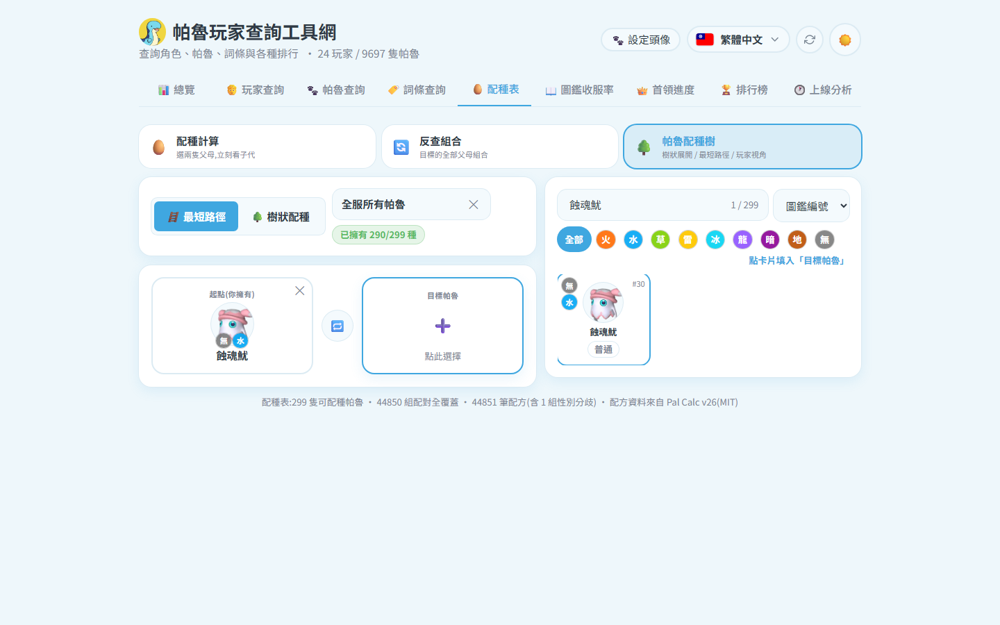
🪜 最短路徑:自動算出最少代數;A、B、起點、目標全都能點擊就地抽換
✅ 玩家視角(右上下拉):選「全部帕魯種類/全服所有帕魯/某位玩家」,整個配種樹與路徑會標記 ✓已擁有/缺,並可一鍵從擁有的帕魯自動找最短起點。
📖 圖鑑收服率
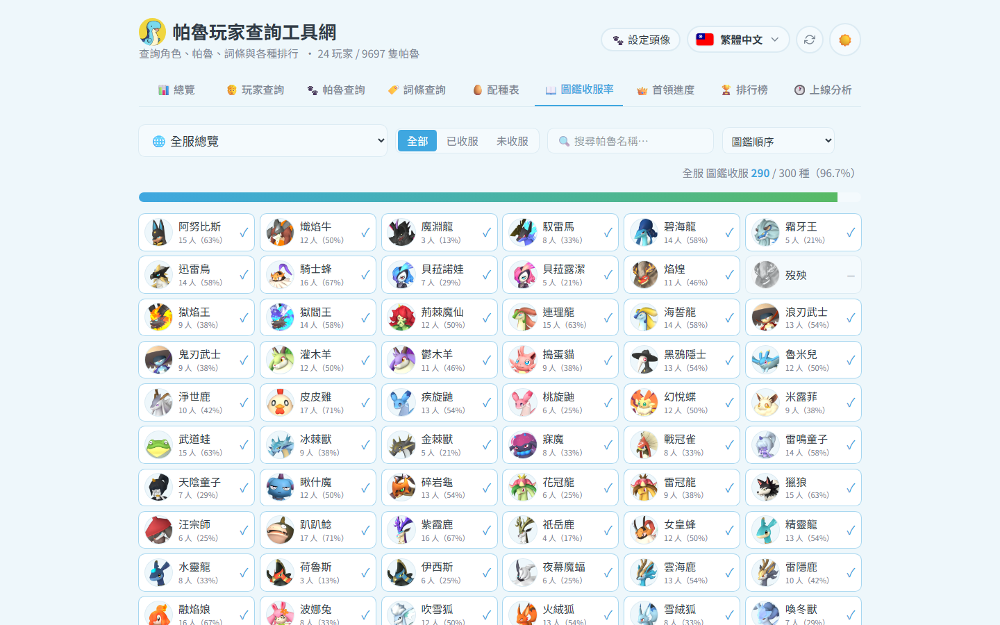
每位玩家的收服達成率;可切換 全部/已收服/未收服 檢視缺了哪些
👑 首領進度
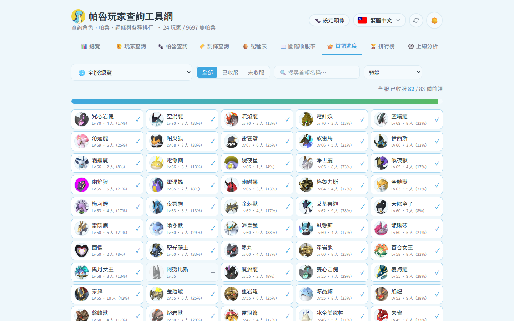
α 首領/塔王名單與各玩家收服狀態
🏆 排行榜
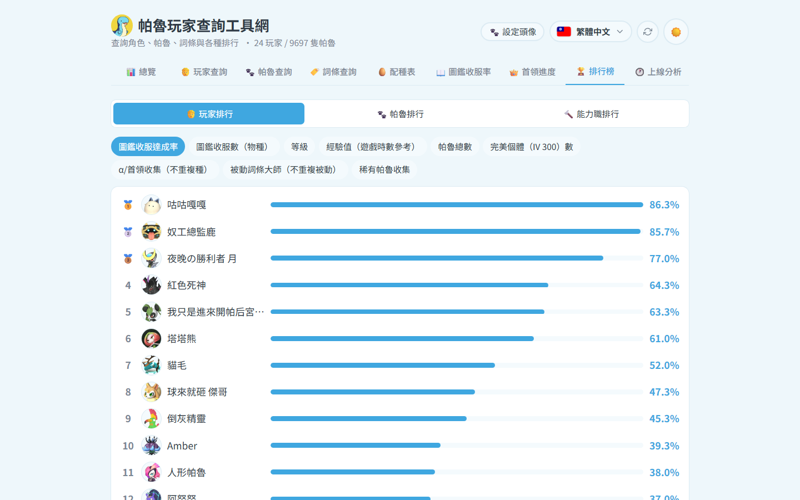
玩家排行(圖鑑/等級/完美個體…)、帕魯排行(戰力/IV/好感度)、能力職排行
🕐 上線分析
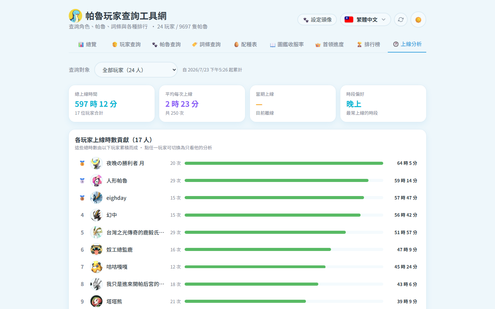
各玩家上線時數與時段熱力,找出全服最熱鬧的時間
配方資料:tylercamp/palcalc(MIT)· 屬性/稀有度:palworld-save-pal · 完整專案:palserver-tools